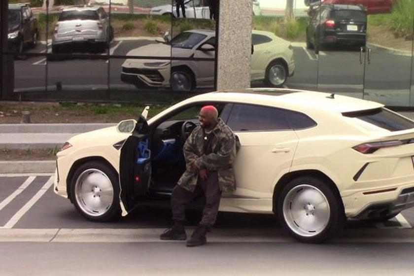

The Lamborghini Urus uses a 4.0L twin-turbocharged V8 that produces 641 horsepower. This allows the 4,844 pound suv to go to 0-62 mph in 3.6 seconds. 0- 124 in 12.8 seconds. The urus also boasts a top speed of 190 mph which makes it the fastest suv of all time.
"The 2019 Lamborghini Urus exhibits stellar handling, ultra-quick acceleration and incredible stopping power."- cnet
When you buy a Lamborghini Urus brand new, you can customize every detail of the paint to the color of the seatbelt. The car has the highest quality Italian leather, that you can choose the color of. There is endless options you can choose from with the Urus. These options allow you you to change almost every feauture of the car which allows you to completely personalize the car. One of the more unique options is the ability to add a towing kit which allows you to carry a trailer on your Lamborghini.
The price of owning the best does not come cheap. The base price for a Urus is 200,000 dollars. If you add the options it can go way over this base price.
priceAs you probably noticed Suvs are the most popular cars on the road right now. Since Lamborghini is one of the most expensive and luxurous car brands, many celebrties have purchased it which had made the car extremely popular. Rappers Kanye West, Gunna and Young Thug all have the Urus. Kanye generated some buzz by putting ugly space ship like rims on his Urus. Rapper Gunna even madea a song about his Urus.
